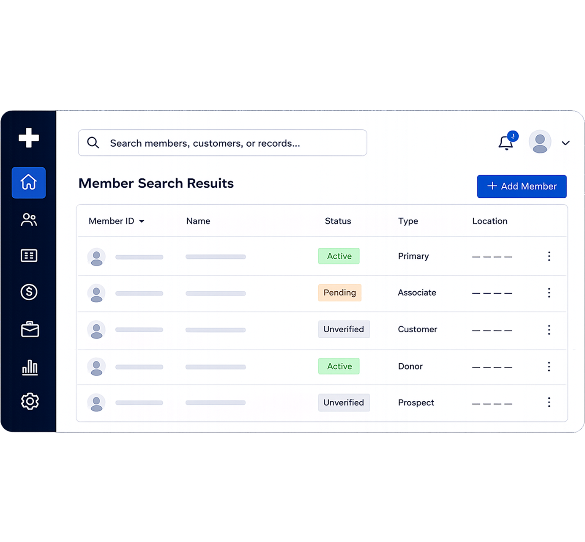

Discovery
AI helped synthesize stakeholder notes, support tickets, competitor patterns, usability feedback, and internal documentation.
A growing digital platform needed to redesign and scale its memberships experience across web and mobile while reducing iteration time across the product lifecycle.

AI helped synthesize stakeholder notes, support tickets, competitor patterns, usability feedback, and internal documentation.
The final design was structured around reusable primitives rather than isolated screens or one-off membership states.
AI accelerated scaffolding and validation, while human judgment shaped constraints, tradeoffs, QA, and product quality.
A growing digital platform needed to redesign and scale its memberships experience across web and mobile. The existing system had fragmented flows, inconsistent UI patterns, and increasing friction between product, design, and engineering teams.
The goal was not just to redesign screens. It was to create a production-ready system that could scale quickly while reducing iteration time across the entire product lifecycle.
My role combined product design, system thinking, frontend collaboration, and AI-assisted workflows.
The team faced three major problems:
Traditional design workflows were too linear for the speed required.
How do we design faster without sacrificing production quality?
Instead of treating AI as a screen generator, I integrated it throughout the workflow as a systems and acceleration layer.
AI helped reduce repetitive work, surface edge cases faster, and speed up exploration, while human judgment remained critical for product thinking, prioritization, and production quality.
I used AI to synthesize large volumes of stakeholder notes, support tickets, competitor patterns, usability feedback, and internal product documentation.
This helped identify recurring friction points across onboarding, billing, and account management flows.
The outputs still required validation and prioritization. AI surfaced patterns quickly, but product relevance, business tradeoffs, and UX clarity required human decisions.
Instead of manually creating every direction from scratch, AI accelerated early exploration.
I used it to generate alternative user flows, test navigation structures, rewrite UX copy variations, explore component combinations, and prototype edge-case scenarios.
The team reviewed broader solution spaces in days instead of weeks.
The project required scalable UI patterns across multiple membership states and permissions.
AI helped map inconsistent components, detect duplicate variants, suggest token structures, and generate implementation-ready documentation drafts.
AI could organize systems, but not define product quality. I refined hierarchy, interaction behavior, responsive logic, accessibility decisions, and component scalability.
The final system was structured around reusable primitives rather than isolated screens.
One of the biggest workflow improvements came from reducing the gap between design and engineering.
AI assisted in generating frontend scaffolding, validating responsive behavior, checking implementation consistency, and comparing production UI against design specs.
From “Does this match Figma?” to “Does this solve the product problem correctly?”
As AI-generated outputs became more common, quality control became increasingly important. A major part of my role became acting as a constraint and validation layer.
I used AI to identify missing edge cases, stress-test flows, simulate inconsistent states, and audit design-system usage. Then I manually refined the outputs to ensure production quality.
AI increases output speed. Systems thinking determines output quality.
The final platform achieved:
Most importantly, the workflow itself became more scalable.
The project was not successful because AI generated screens. It was successful because AI was integrated into a structured product design process with strong systems thinking, constraints, and production-level QA.
AI did not replace product design. It changed where designers create value.
The leverage shifted from manually producing screens to defining systems, shaping workflows, validating quality, and orchestrating decisions across tools, teams, and outputs.
The future advantage is not prompting faster. It is building workflows that turn AI output into production-ready products.